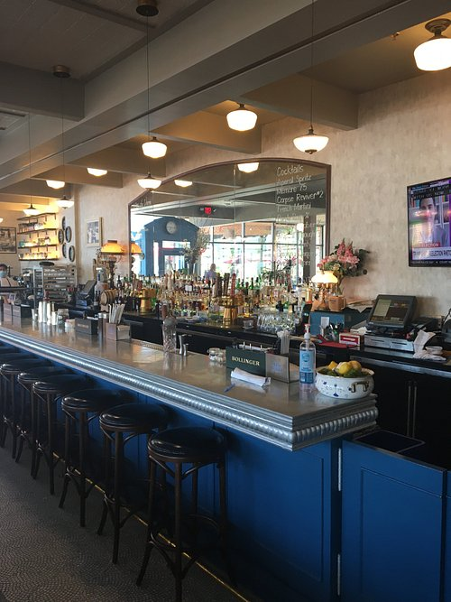

Location: Address: 93 Vervalen St, Closter, NJ 07624 Phone: (201) 768-0008 Hours: Closed ⋅ Opens 10 AM
Brasserie Mémère is a classic French brasserie created by Chef Thomas Ciszak. Ciszak’s inspiration comes from his warm childhood memories of his mémère, or “granny” in English, who was culinary trained in Germany. Memories of spending time in the garden with his grandmother planted the love for food and inspired Ciszak to embark on a culinary career.
My Experience: This place is quite good! I used to get the muscles with fries and dip them in the sauce. I feel all of the menu items I have had are solid and the desserts are really good! It is very impressive to me how they were able to decorate the restaurant. It has very tasteful French style decor that makes eating there a great experience. There is also plenty of outdoor seating.
